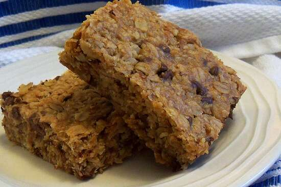

Oatmeal Peanut Butter Bars

Description
The best granola bars in the world, it makes a great snack in the afternoon.
Ingrediants
- 1 cup peanut butter
- 1/2 cup packed brown sugar
- 1/2 cup corn syrup
- 1/3 cup butter
- 2 teaspoons vanilla extract
- 3 1/3 cups rolled oats
- 1/2 cup flaked coconut
- 1/2 cup sunflower seeds
- 1/2 cup raisins
- 1/2 cup semisweet chocolate chips
Steps
-
Preheat oven to 350 degrees F (175 degrees C).
-
In a large bowl stir together the peanut butter, the butter or margarine,
the brown sugar, the syrup and the vanilla until smooth.
-
Add all the other ingredients. Stir well.
-
Press the mixture into 13 x 9 inch greased pan. Bake for 20-25 minutes.
Let cool on wire rack before cutting into bars.